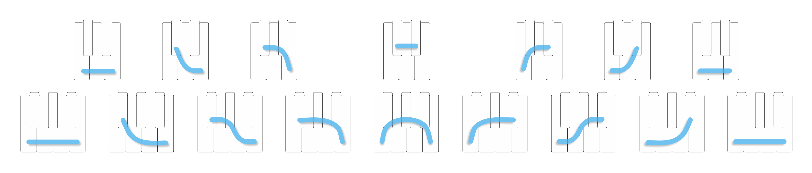

So while you’re playing, eventually some of the shapes start to feel familiar. It's like ok, I've already played with this one, or I've seen that one before… and you also start to pick up on some similarities between the shapes.
One question that might come up while you're playing is, how many shapes are there? Are there, like, infinite different shapes? Or is this something I can actually wrap my head around?
So I want to show you the whole group of shapes, all at once.

These are all of the shapes you're going to see in this playlist.
And here's how you read this group: if a pair of strokes are right next to each other, like these [show],
then they get to be a shape.
But if they're not right next to each other, like these [show], or these...
then they don't get to be a shape.
So the first shape we played with was this pair in the middle [show],
And shape for the song that's playing right now is right here [show].
Also notice how every shape on one side has its mirror image on the other side [show].
And this symmetry makes the shapes even easier to remember, because if you know one shape, you can think of its opposite and then you know two shapes instead of just one.
Now, I think it's pretty great to be able to play without having to name any of these shapes, or having to name any of the notes that make them up.
Because in a way, the keyboard itself, and the contour of the shape, already works as a kind of name. What note is it?
Well, it's this note [show]. What shape is it? Well, it's the shape that goes like this [show].
But when it comes to a group of shapes, having names can help us out.
Here's how shape names work. The keyboard has keys that stick up, the "top" keys, and keys that don't stick up, the "bottom" keys.
You can name any shape by its number of top keys, and whether they're on the right or left side of the shape.
So this pair right here [show], it has one top key, and it's on the right side of the shape, so it's called "1 to the Right."
And then this pair over here [show], its opposite, has one top key on the left side of the shape, so it's called "1 to the Left."
Then this pair [show], it has one, two top keys, and they're on the right of the shape, so it's called "2 to the Right."
And this pair [show], it has one, two on the left, so it's called "2 to the Left."
So there's [show] 1, 2, 3, 4, and 5 to the right
and 1, 2, 3, 4, and 5 to the left
The shape in the middle is called the "TOP" shape, because it’s centered on the top keys, and the one on the end is the "bottom" shape, because it uses all the bottom keys.
The bottom shape repeats on both ends of the group because the whole group sort of wraps around on itself.
So if we look at the shape that's playing right now, it’s this pair here, and let's see, it has how many top keys? [count] And they're on the right side of the shape, so it's "5 to the Right."
If I switch songs [switch], This one has 5 top keys
and they're on the left, so it's called "5 to the Left."
[switch again] And this one has 3 top keys
and they're on the right, so it's called "3 to the Right."
So give this a try yourself. Play along with some different songs, just like you were doing before, but now when a new shape comes up, name it for yourself first. Like, oh this is "2 to the Left," and then play with it.
When you name a shape, pay attention to how the name describes the contour of the shape, and it also tells you the shape's position within the larger group.
So you start to get a feeling for how that shape is related to other shapes in the group.
Just like before, don't be shy to play with songs you aren't familiar with.
And also, you don't need to try to memorize the shapes. You'll get to know them gradually, just by playing with them.
So see what you come up with, and when you feel comfortable naming and playing with each new shape that shows up, that's when you're ready to come back for more.
Lesson 3 Playlist:
https://www.shapesmusic.com/a-group